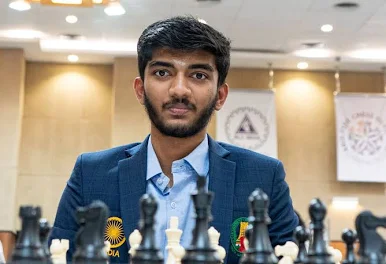
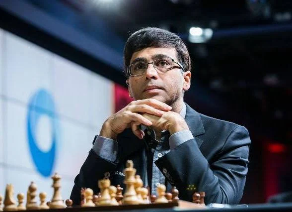
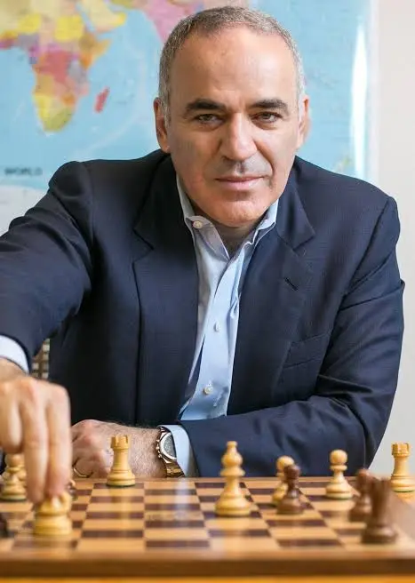
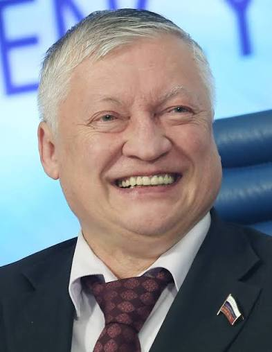

Один із найяскравіших представників нового покоління шахістів, Гукеш Доммараджу ще з юного
віку демонстрував винятковий талант. У 2019 році він став одним із наймолодших гросмейстерів в
історії. Він здобув цей титул у віці лише 12 років. Завдяки стрімкому прогресу та стабільно сильним
результатам він піднявся до вершини світового рейтингу, який веде FIDE.
Гукеш відомий своїм сміливим і активним стилем гри. Він часто обирає складні та динамічні позиції, у
яких може максимально використати свою тактичну точність і глибоке розуміння позиції.
Попри молодий вік, він уже здобув перемоги на багатьох престижних турнірах і швидко піднявся до еліти
світових шахів. Багато експертів вважають його одним із головних претендентів на домінування у шахах у
найближчі роки. Він використовує різноманітний дебютний репертуар, щоб ускладнити підготовку суперникам
і вивести партію у незнайомі для них позиції.

Один із найвидатніших шахістів сучасності, Магнус Карлсен рано проявив свій винятковий талант. Уже в 13
років він став гросмейстером та швидко привернув увагу шахового світу своїм глибоким розумінням позицій і надзвичайною точністю гри.
У 2013 році Карлсен став чемпіоном світу, коли переміг індійського гросмейстера Вішванатана Ананда. Після цього він кілька разів успішно
захищав свій титул і багато років утримував перше місце у світовому рейтингу.
Карлсен встановив рекорд найвищого рейтингу Ело в історії шахів і відомий своїм універсальним стилем гри,
сильним ендшпілем та здатністю знаходити точні ходи навіть у найскладніших позиціях.
Перегляньте партії Магнуса Карлсена, щоб зрозуміти, як він отримав настільки високий рейтинг Ело, та й досі
тримається на вершині цього рейтингу.
Серед багатьох видатних шахових гросмейстерів Ананд вирізняється як справжній першопроходець для своєї країни.
Його часто називають людиною, яка відкрила Індії шлях до світових шахів.
У 1988 році FIDE присвоїла йому звання гросмейстера, і він став першим гросмейстером в історії Індії. Його успіхи
надихнули ціле покоління індійських шахістів.У 1991–1992 роках Ананд став першим лауреатом премії Раджив Ганді Кхел
Ратна – найвищої спортивної нагороди Індії, яку було засновано саме тоді. Згодом він також став першим спортсменом-шахістом,
якого нагородили другою за значенням цивільною нагородою країни — Падма Вібхушан. Ананд також здобув славу одного з найсильніших
гравців свого покоління у швидкі шахи. Він двічі ставав чемпіоном світу з рапіду та багато років вважався одним із найнебезпечніших
суперників у швидких форматах гри.Його протистояння з Магнусом Карлсеном стало одним із найцікавіших у сучасній історії шахів.
Воно своєрідно ознаменувало зміну поколінь на світовій шаховій арені.

Справжня легенда шахового світу — цей гравець здобув так багато титулів і постаиви так багато рекордів, що замість переліку всіх
його досягнень (бо цей список буде величезний!) краще згадати один із його найгучніших і найсимволічніших матчів у його кар’єрі.
Після суперечки з FIDE у 1993 році Каспаров відокремився та створив власну шахову організацію — Professional Chess Association.
Однак ця структура проіснувала відносно недовго — приблизно три роки.Згодом він зіграв серію матчів проти шахового суперкомп’ютера
IBM DeepBlue. Після кількох поєдинків комп’ютер зрештою переміг Каспарова.Так Каспаров увійшов в історію ще й тим, що став першим
чемпіоном світу з шахів, який програв матч комп’ютеру — подія, що символізувала нову епоху в розвитку шахів і технологій.Гаррі Каспаров
за свою кар'єру був нагороджений одинадцятьма шаховими преміями «Оскар» як найкращий шахіст року! Він був удостоєний цієї нагороди
у 1982-1983, 1985-1988, 1995-1996, 1999 та 2001-2002 роках.

Протягом десяти років Карпов був чемпіоном світу з шахів. Зрештою його змістив Каспаров, з яким він зустрічався у кількох матчах
за світову шахову корону, коли намагався повернути собі титул.Після того як Каспаров залишив FIDE Карпов знову здобув чемпіонський
титул, але його відносини з федерацією також були напруженими. У 1999 році він відмовився від свого титулу.За свою шахову кар'єру
Карпов здобув приблизно 160 турнірних перемог, що робить його одним із найуспішніших шахістів в історії.Як гравець, Карпов зазвичай
уникав зайвого ризику, але був уважним до найменших помилок суперників і безжально використовував їхні слабкі сторони. Через цей
позиційний і стратегічний стиль його часто порівнюють із Хосе Капабланка.
